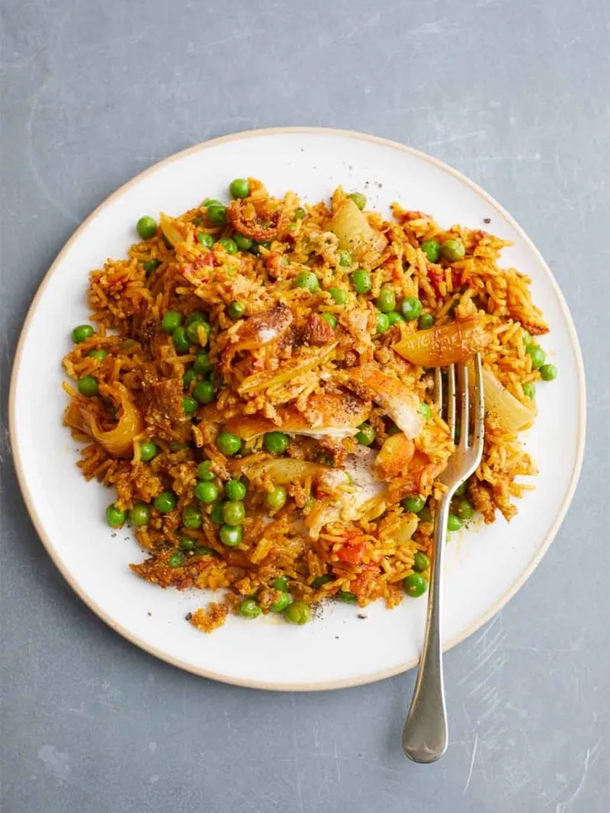

One Pan Spicy Chicken
Lets see the ingridients needed to create one pan spicy chicken.
- 1 kg chicken thighs , skin on, bone in
- 2 onions
- 2 tablespoons tikka masala curry paste
- 1 x 400 g tin of plum tomatoes
- 1 mug of basmati rice (300g)
- 500 g frozen peas
- 1 x 400 g tin of light coconut milk
Now, lets see the methods for creating this recipe:
- Place a large casserole pan on a medium-high heat. Season the chicken thighs with a pinch of sea salt and plenty of black pepper, then place in the pan skin-side down for 10 minutes, or until browned, then use tongs to turn them over and carefully remove the chicken skin. Place it in the pan alongside the thighs, removing to a board once crisp, then roughly chop.
- Meanwhile, peel and finely chop the onions and add to the pan. Cook for 2 minutes, or until golden, then stir in the curry paste and cook for 10 minutes.
- Tip in the tomatoes, breaking them up with a spoon, then cook for 5 minutes, until thickened.
- Stir in the rice to toast for 1 minute or until translucent, then pour in 2 mugs of water (600ml). Give it a stir, turn over the chicken and cover with a lid. Leave to simmer for 12 minutes, or until the rice is cooked, stirring in the peas and most of the coconut milk for the final 2 minutes. When it’s blipping away in the middle starting to catch at the edges, remove from the heat. Ripple through the remaining coconut milk, then divide between plates. Sprinkle over the crispy chicken skin and serve.
This way you can create this tasty recipe from the comfort of your home.
Back to Homepage